Equalscope
Equalscope1. Before you start
1.1 What is in the box

| Part | What it is |
|---|---|
| Device | 2.8" touch LCD · pressure sensor · SD card slot (card sold separately) · built-in battery · speaker · USB port |
| Accessories | Equal Vent (Nemo / whale shark character) · 4 mm PU tube · pressure relief valve · USB cable |
| Case | 3D-printed body (orange / blue) · stand that doubles as a connector cover |
1.2 Charging and power

- Charging: plug a USB-C cable into the port on the device.
- A green light to the left of the USB connector comes on so you can see it is charging. The light goes out when charging is finished.
- The battery reading refreshes about every 10 seconds, so you can also watch the percentage climb while it charges.
- Turning it on: hold the physical power button for about 3 seconds. After the splash screen it spends about 5 seconds setting the zero point.
- ⚠️ While it is zeroing, do not hold the Equal Vent to your nose or put any pressure into the tube — leave it at ambient pressure. The baseline it takes here decides how accurate everything after it is.
- Turning it off: two ways.
- Hold the physical power button for about 3 seconds
- Press [Power] on the main screen
- Auto off: it switches itself off after the set idle time (9.4).
- Low battery protection: below 15% it beeps at intervals; below 5% it counts down 10 seconds, saves the measurement and shuts down. Charge it when you hear the warning (it does not trigger while charging).
1.3 SD card

- It goes in the slot on the device, and you can insert and remove it while the device is on.
- It is used for measurement files and screenshots.
- You can measure and save without a card, using the internal memory (see 6.2 for the difference).
- Firmware updates no longer need an SD card either — a USB cable is enough (10.1).
- Any card works. 32 GB and under (FAT32) of course, and 64 GB and larger cards (exFAT) are read as they are. The card from your action camera is fine.
- Measurement files are tiny — 8 GB lasts years. You do not need a big card.
- Firmware v1.1g and older cannot read cards of 64 GB and up. If you are on one of those, format a card as FAT32, do the update first, and after that any card will do.
1.4 Specifications
| Item | Detail |
|---|---|
| Model | EQ-28 |
| Display | 2.8-inch touch LCD (320×240, landscape) |
| Size | Device 90 × 77.6 × 25 mm · bag 180 × 120 × 60 mm |
| Pressure sensing | Pressure sensor · 40 Hz sampling · automatic zeroing at power-on |
| Motion sensor | 6-axis accelerometer / gyro — contraction detection · tap to start · movement detection while zeroing |
| Training modes | Equalization measurement · breath training (CO₂ / O₂ tables) — chosen at power-on |
| Storage | Internal memory + microSD slot (sessions as CSV / screenshots as PNG) · SD card not included |
| Audio | Speaker — pressure alarm · EQ Interval alarm · English voice guidance for breath training (female / male) |
| Power | Built-in Li-Po battery 3.7 V 1,000 mAh (USB charging) |
| Connection · updates | USB file transfer to a PC · firmware update by USB cable or SD card |
| Connector | 4 mm pneumatic quick connector |
| Languages | English / Korean |
| Certification | KC radio certification · R-R-SSD1-EQ-28 |
| Intended use | Dry land training only · not waterproof · not a medical device |
| In the box | Device · stand · Equal Vent · tube · graduated pressure relief valve · USB cable |
2. Basic measurement
2.1 Connecting and wearing

- Device ↔ tube: push the connector on the end of the tube onto the connector on the device until it clicks. To take it off, simply pull the tube connector straight off.
- Tube ↔ Equal Vent: push the tube straight into the push-fit on the Equal Vent. To remove it, press down the plastic collar on the fitting and pull the tube out.
- Switch on, wait for the zeroing to finish, and you are ready to measure.
- You hold the Equal Vent up to your nose when you measure — line up the holes on the front of the Equal Vent with your nostrils. (Do this after you start the measurement — see 2.3.)
2.2 Using the pressure relief valve

- The graduated dial sets how much air bleeds out. The higher the number, the more pressure escapes.
- How to use it: to change the setting, pull the valve out and turn it; to lock it there, push it back in.
- It indirectly simulates the air in your mouth running out, so you can practise the techniques that matter at depth — mouthfill above all — on dry land, over and over.
- Because the dial is graduated, it is easy to set the same conditions again next time.
2.3 How a measurement runs
press [Start] → equalize (live graph) → [Stop] → saved automatically → [Stats]
- [Start] — begins the measurement. The graph is drawn live.
- Measure — hold the Equal Vent up to your nose and equalize. Current, minimum and maximum pressure are shown as numbers and on the graph.
- [Stop] — when you stop, the result is saved automatically (6.1).
- [Stats] — after stopping, the [Start] button becomes [Stats]. Press it to see the pattern analysis (chapter 5).
- To measure again, press [Reset] to clear the graph.
2.4 Reading the main screen
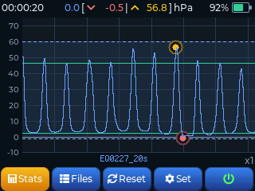
While you measure, the main screen shows all of this at once.
- Three pressure values — current / minimum (▼) / maximum (▲), in hPa
- Stopwatch — top left, elapsed time (hh:mm:ss)
- Battery — top right
- Live graph — in the middle. It tracks the run so far with an orange line for the highest point and a red line for the lowest (chapter 4 covers this in detail)
3. Screen controls
3.1 The five buttons
There are five buttons along the bottom of the main screen. [Start] [Files] [Reset] [Set] [Power]
| Button | What it does |
|---|---|
| Start | Starts a measurement. While measuring it reads Stop, and after stopping it reads Stats |
| Files | Shows your saved measurements (chapter 6) |
| Reset | Clears the graph and returns to the ready state |
| Set | Options and theme (chapter 9) |
| Power | Switches the device off (icon only). Holding the physical power button for 3 seconds does the same |
3.2 Gestures
| Gesture | What it does |
|---|---|
| Pinch (two fingers) | Zooms the graph in and out along the time axis |
| Swipe (one finger, left / right) | Scrolls the graph sideways |
| Three-finger tap | Screenshot (needs an SD card — see 6.7) |
| Tap the device | Starts a measurement; tap again to stop. Off by default — turn it on in settings page 4 (9.4) |
Tapping is for the moment when one hand is busy holding the Equal Vent to your nose. Give the device a light tap where it sits on the table and the measurement starts; tap it once more to stop. You do not have to hit a button accurately.
It does not respond while you are holding it in your hand. Only a tap on a device that was sitting still counts. If it misses your taps or reacts too easily, adjust Tap sensitivity (9.4).
4. Reading the graph
On the live graph in the middle of the main screen, the horizontal axis is time and the vertical axis is pressure (hPa). It samples at 40 Hz (40 times a second), so the pressure in your mouth and ears is drawn almost in real time.
4.1 What is on the graph


| Element | Looks like | Meaning |
|---|---|---|
| Your line | Solid line | The pressure being measured right now. The main subject of the graph |
| Peak marker | Mark / dot above | The highest pressure in the session |
| Trough marker | Mark / dot below | The lowest pressure in the session |
| Reference line | Line in a separate colour | A reference session you have loaded — see 6.5 |
| Average lines | Horizontal lines | Average height of the analysed peaks and troughs (shown after you stop) |
| Training band | Shaded band with dotted edges | The pressure alarm range you set (9.2) |
4.2 The numbers at the top
Three pressure values are shown live above the graph.
- Current pressure — the pressure at this moment
- Minimum (▼) — the lowest value since the measurement started
- Maximum (▲) — the highest value since the measurement started
The stopwatch (elapsed time) sits in the top left and the battery in the top right.
4.3 The training band (pressure alarm range)
Turn the pressure alarm on in settings (9.2) and the range you set between the minimum and maximum is drawn on the graph as a shaded band, with dotted lines along the top and bottom edges.
- Use it to keep your equalization inside a target range while you watch it happen.
- If the pressure leaves the range, the device sounds an alarm (as long as the volume is up).
4.4 Zooming and scrolling
- Pinch (two fingers apart or together) — zooms the time axis in and out, to look closely at a short stretch or see the whole session at once.
- Swipe (one finger, left or right) — scrolls the graph sideways while zoomed in. Your line and the reference line move together.
The zoom level is shown at the bottom right (x1, 1/2 and so on). You can change the starting zoom in settings (9.3).
5. Session analysis

When you stop a measurement it is saved automatically and the [Start] button becomes [Stats]. Press it to see the numbers, the pattern verdict and a message of advice.
5.1 Reading the numbers
Here is what the figures on the analysis screen mean. Which ones you see depends on the pattern — oscillating patterns (the Valsalva and Frenzel family) get peak-based figures, while sustained patterns (mouthfill) get stability-based ones.
Shown for every session
| Label | Meaning | How to read it |
|---|---|---|
| Time | How long the session lasted (seconds) | |
| Max / Min | Highest and lowest pressure in the session (hPa) | |
| Avg | Average pressure over the session (hPa) |
Oscillating patterns (Valsalva / Frenzel / mouthfill Frenzel / BTV)
| Label | Meaning | How to read it |
|---|---|---|
| Peaks | How many equalizations (peaks) were detected | The number of repeated equalizations |
| Interval | Average gap between peaks (seconds) | How long one equalization took on average. The steadier it is, the steadier your rhythm |
| Peak CV | How uneven the peak heights are (%) | Lower is more even — you equalized with a similar strength every time. High means it varied |
| Rise speed | Average speed from trough to peak (hPa/s) | Higher means faster pressurization. Frenzel tends to be faster than Valsalva |
| Fall speed | Average speed from peak to trough (hPa/s) | How quickly you release the pressure |
| Hold | Average time spent near the top of a peak (seconds) | Short means Frenzel (sharp peaks), long means Valsalva (broad peaks) |
| Hi (avg) | Average pressure of the peaks (hPa) | |
| Lo (avg) | Average pressure of the troughs between peaks (hPa) |
A feel for the rise and fall speeds: the unit is hPa/s, and a bigger number means a faster change. (The label already says "speed", so the unit is left off the screen.)
Sustained pattern (mouthfill)
| Label | Meaning | How to read it |
|---|---|---|
| Hold | How long you held the pressure (seconds) | How long you kept the mouthfill pressure steady |
| Pressure SD | How much the pressure wobbled while you held it (hPa) | Smaller is steadier. You kept an even pressure against the ears |
5.2 The six patterns


Equalscope weighs up the shape of the curve and sorts it into one of six technique patterns.
| Pattern | Shape of the curve | What it means |
|---|---|---|
| Valsalva | Slow rise, broad peaks (long time at the top) | Driven by abdominal and chest pressure. It runs out at depth. The usual candidate for switching to Frenzel |
| Valsalva + Frenzel | Slow rise → a shoulder → a sharp Frenzel push | A mix with some Valsalva left in it. The shoulder is the evidence of the switch |
| Frenzel | Fast rise, narrow sharp peaks (short time at the top) | Pressure delivered by the tongue. Efficient, and the basis for going deeper |
| Mouthfill | Low pressure held for a long time | Air stored in the mouth and spent slowly. The key technique at depth |
| Mouthfill Frenzel | Small repeated peaks on top of a high trough | An advanced pattern: the mouthfill air spent in small Frenzel portions |
| BTV (hands-free) | Regular oscillation at very low pressure | Opening the tubes directly with the muscles around them instead of pushing air. Largely innate, and rare |
5.3 Confidence in the verdict
A confidence figure (%) may be shown next to the pattern. It says how clear-cut the verdict is.
- High (clear) — the curve is close to the textbook form of that pattern.
- Around 50% (borderline) — halfway between two patterns. It might be, say, "half Valsalva and half Frenzel".
- Low (inconsistent) — read this as a sign that your technique was not consistent through the session.
5.4 Quality grade and warnings
The verdict comes with a quality grade and any warnings.
Quality grade
- Oscillating patterns: the more even your peaks, the better the grade — you equalized with a similar strength every time.
- Sustained pattern (mouthfill): the grade comes from how steadily you held the pressure.
Warnings (shown when they apply)
| Warning | Meaning | What to check |
|---|---|---|
| Negative pressure (two levels) | Pressure dropped below zero between equalizations | Equalizing is about pushing air — check that no sucking has crept in. If it is shallow and rare the device simply tells you it happened; if it is deep or repeated it warns you more firmly (at depth this can injure the ears) |
| Over-pressure | Abnormally high pressure | Forcing it — risk of injury, ease off |
| Unstable late on | Pressure wobbles in the later part of the session | The point where endurance or concentration gave out |
| Short session | Not long enough to analyse | Measure for longer |
5.5 Technique per block (EQ Interval)
If you record with EQ Interval (7.1) turned on, the device judges the technique in each interval block separately. So you can train the way a descent usually goes — "Frenzel while it is shallow, then mouthfill deeper down" — and each block is analysed on its own instead of the whole session being lumped together.

- The summary by block sits at the top of the analysis screen (for example "1: Frenzel / 2–3: mouthfill").
- Below it come the figures and advice for each block in order — the same content as the whole-session analysis (5.1–5.4), one block at a time.
- If a block is too short (under about 5 seconds) it is marked as not having enough to analyse.
- Sessions recorded with the interval off are analysed as one whole, as before.
5.6 Making use of the advice
At the bottom of the analysis screen is a message of advice matched to the pattern and the quality. (For example: "There is still some Valsalva in this. Ease off the abdominal effort and work on delivering a short push with the tongue.")
Open the same recording again and you get the same advice, but a different recording is described differently.
⚠️ This analysis and advice are for reference, based on the measured pressure pattern. They are not a medical diagnosis or a guarantee of safety. Train under the supervision of a qualified instructor.
5.7 Comparison (firmware 2.2 and later)
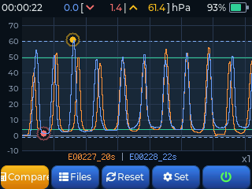
Open another recording while a reference is loaded and the [Stats] button becomes [Vs Ref]. Press it and you first get a table with the two sets of numbers side by side, then a few lines saying what has changed. The analysis of the current recording follows as usual.
How to use it — in the Reference tab (6.5), [Open] the recording you want to compare against,
then go back to [Files] and open the one you want to look at. A session you have just finished works too.

| What is compared | Details |
|---|---|
| Equalization training | Average peak · interval between equalizations · spread of that interval · evenness of strength · negative pressure |
| Mouthfill | Maximum pressure · hold time · pressure wobble while holding · negative pressure |
| Change of technique | It also points out a change such as Valsalva → Frenzel |
The number of equalizations is not compared. Negative pressure is judged by depth, not by how often it appeared.
In these cases it does not compare, and tells you why.
- When a mouthfill recording is set against a non-mouthfill one — mouthfill has almost no oscillation, so it is analysed differently
- When one of the two is split into blocks (EQ Interval and the like)
- When a recording is too short to settle on a technique
Even when it cannot compare, the analysis of the current recording appears as usual.
6. Managing files
6.1 Automatic saving and the file format
Stop a measurement and the result is saved automatically.
- File name:
EQ0001_120s.csvEQ+ a four-digit number (one higher each measurement) + the length in seconds- For example
EQ0042_23s.csvis the 42nd measurement, 23 seconds long
- Format: CSV, with the columns
Time(ms), Pressure(hPa), Max, Min - Automatic trimming: the empty stretches at the start and end (zero pressure) are cut off and only the real signal is saved. If there is almost no signal, or it is very short, nothing is saved.
Files go to the SD card if one is fitted, and to the internal memory if not. If there is a problem with the card it saves to the internal memory instead and says so on screen.
When a measurement ends, the name of the saved file appears at the bottom of the screen (firmware 2.3 and later). It stays there until you touch the screen, so it is easy to find that session in the list later.
It saves even if you never press stop. If no pressure arrives for one minute after you have been equalizing, the device treats the session as finished and saves it. Walk away and leave the device running, and your recording is still there.
- In interval training with rests between sets, starting again within a minute keeps it in one file rather than breaking it up.
- If you equalize again after it has auto-saved, that part is not recorded. To record it, press [Stop] and then [Start] again.
- If you only pressed start and did nothing, no file is created.
6.2 Internal memory vs SD card
| Storage | Character |
|---|---|
| Internal memory | Built in, always available with no card. Small — past 200 files the count turns a warning colour (time to tidy up or move files to a card) |
| SD card | Plenty of room, easy to move onto a PC. Can be inserted or removed at any time |
6.3 A tour of the file screen

Press [Files] on the main screen to open the list of saved measurements.
- Three tabs along the top: Internal / SD Card / Reference
- Files are shown 21 to a page (3 columns × 7 rows), newest first.
- If there is more than one page, swipe left and right to turn it. (The bottom shows something like
1/2 32 files.) - Tap a file to select it.
6.4 The Internal and SD tabs
Select a file in the Internal or SD tab and these buttons become available. [Open] [Copy] [Ref] [Del] [Close]
| Button | What it does |
|---|---|
| Open | Loads the measurement onto the graph. It appears on the main screen and you can review it with [Stats] |
| Copy | Copies to the other storage. From the Internal tab it goes to the SD card, from the SD tab to the internal memory |
| Ref | Adds the measurement to the reference list. Once added it appears in the Reference tab (6.5) |
| Del | Switches to delete mode, where you can remove several at once (6.6) |
| Close | Leaves the file screen |
6.5 The Reference tab and training against a reference graph
The reference graph is the heart of training with Equalscope. It lays a model pattern in the background and draws your live graph over the top, so you can follow it or compare against it.
How people use it: an instructor measures a model equalization pattern and hands it out as a reference → the student loads it into the background and trains by following it.
Select a file in the Reference tab and the buttons change. [Open] [Unset] [Edit] [Del] [Close]
| Button | What it does |
|---|---|
| Open | Loads the reference as the background graph. It appears behind your own line on the main screen |
| Unset | Takes the reference graph off the main screen. It is not removed from the reference list |
| Edit | Renames the reference file. A meaningful name such as frenzel_ref is easier to find than a number like EQ0042 (6.9) |
| Del | Delete mode |
| Close | Leaves the screen |
Open another recording while a reference is loaded and you get a comparison of the two (5.7).
Reference files live in the internal memory, so they survive removing the SD card. The zoom stays where you had it, so patterns of different widths (Valsalva, Frenzel and so on) can be compared at the same scale.
6.6 Deleting several files at once
Press [Del] to enter delete mode.
- Tap the files you want to remove one by one (the top shows
selected / total) - [All] selects them all at once
- Press [Del] again to confirm, or [Close] to cancel
6.7 Screenshots
Tap the screen with three fingers and it is captured as an image straight away. Handy for keeping an analysis or a graph as feedback material.
- Where they go: saved as PNG in the
capture/folder on the SD card.- An SD card is required. Without one you get "Insert SD card".
- File name:
SCR_00292_EQ0206_21s.pngSCR_+ a five-digit number + the name of the measurement file you had open- So a capture taken with a particular measurement on screen matches back to that measurement by name alone.
- To stop accidental bursts, captures are spaced about 2 seconds apart.
In practice: capture a student's analysis screen and you can go over the pressure pattern together afterwards, or set two sessions beside each other.
6.8 Moving files to a PC (USB drive mode)
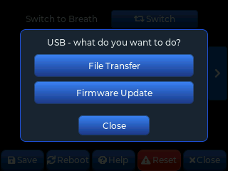
Connect the device to a PC with a USB cable and it appears as a removable drive, so you can copy files straight off it.
- Long-press the [Connect] button for 1.5 seconds on the USB row in settings.
- (The long press is deliberate, so a stray tap cannot switch the USB connection on and off.)
- On the screen that asks what you want to do, press [File Transfer]. (For [Firmware Update] see 10.1.)
- Once it appears as a drive on the PC, copy your measurement CSV files (the
session/folder) and screenshots (thecapture/folder), then eject it safely. - Long-press the device screen for 1.5 seconds to go back to the normal screen.
· Measurement is suspended while USB drive mode is on. It works normally again once you leave.
· Screenshots only ever go to the SD card, so the card has to be in for them to show up over USB.
· Without an SD card, [File Transfer] cannot be selected — the card is the only thing exposed this way. To get files out of the internal memory, copy them to the SD card in the file screen first (6.4).
6.9 Renaming files
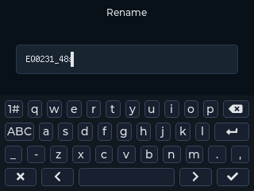
Long-press a file for about a second in the list to rename it. It works in all three places — Internal, SD Card and Reference. The Reference tab also has an [Edit] button.
The Internal and SD tabs have no room for the button, so a note appears at the bottom of the screen: "Tip: long-press to rename" (firmware 2.4 and later). Select a file and the name of that file takes its place.
- This device has no clock, so files carry no date. A number alone makes it hard to tell when a measurement was taken or whose it was. Putting something like
0728 HWat the front helps. - The list is sorted by name. Change the front of a name and the order changes with it — put initials first to group by person, or keep the number first to keep them in order of recording.
- The on-device keyboard is letters and numbers only. If you need other characters, rename the file on a PC and put it back on the card.
- If the name is already taken, it tells you and leaves the name alone — nothing gets overwritten.
- Breath training records are renamed with the [Edit] button (long-press works too), but there only the middle name part changes (8.7).
7. Rhythm training
Equalization settles into a steady rhythm when you repeat it at regular intervals. Equalscope gives you two tools for that.
7.1 EQ Interval
Set up (interval × count) for each block and, from the moment you start measuring, you get a beep and a visual cue in that order. It is a tool for training your equalization rhythm against a descent plan.

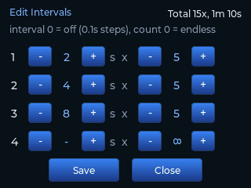
- Where it lives: settings page 1 — the EQ Interval toggle and the [Edit Intervals] button (9.2)
- The editor: up to four blocks, each set as interval (seconds) × count.
- Interval 0 = block off (that block is skipped)
- Below one second it steps in 0.1 s (0.1 → 0.9 → 1 → 2 → …), for training a fast repeated rhythm.
- Count 0 = endless (∞) — it keeps beeping at that block's interval. Here the alarm alternates between a high and a low note, which makes the beat easier to follow.
- The total count and total time are shown live at the top, so you can see how long the whole sequence runs
- How it runs: it starts at block 1 the moment you press [Start]. The alarm times line up with the graph's time axis, so you can trace them afterwards on the graph itself.
- An example: "2 s × 5 → 4 s × 5 → 8 s × 5" — frequent early in the descent, spreading out as you go deeper, so you can plan your equalization frequency by depth and train to it. With a single block on endless repeat it works as a plain metronome.
- Alarm markers on the graph: each alarm leaves a vertical line on the graph (the first alarm of a new block is drawn longer). They move with the zoom and scroll, so you can check "the alarm versus what I actually did" and work on your rhythm.
- Kept in the record: the alarm positions are stored in the measurement CSV, so the markers are still there when you open the file again later.
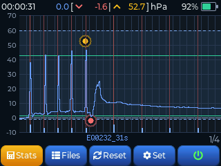
7.2 Stopwatch
While you measure, the elapsed time is shown live as hh:mm:ss in the top left of the main screen. It gives you the training time at a glance, and works with EQ Interval for keeping track of interval sessions.
8. Breath training (CO2 / O2)
Equalscope has a second mode, separate from equalization measurement. Breath training mode takes you through breath-holds and recovery breathing to a table, building CO₂ tolerance and hypoxic tolerance as dry training. It keeps the time, guides you by voice, and saves the session as a record.
⚠️ Never use this in water. Breath training is done out of the water, sitting or lying down safely. Breath-hold training in water must be done with a buddy or an instructor, and this device does not take their place.
8.1 Switching modes
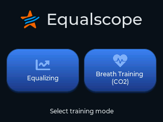
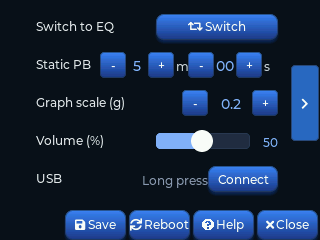
- When you switch on, a screen appears asking which of the two modes you want.
- If you would rather not see it, turn off Ask mode on boot in settings. It then goes straight into the Default mode.
- To change modes while you are using it, press [Switch] in that mode's settings. After you confirm, it saves and restarts (it will not switch during a measurement).
8.2 Reading the home screen

- Top left — the name of the table you have chosen
- Top centre —
8R / 21:00means 8 rounds, 21 minutes in total - The list — breathe time / hold time for each round. Scroll up and down if there are many rounds.
- Buttons along the bottom —
[Start] [Files] [Tables] [Setup] [Power]
8.3 Choosing a table
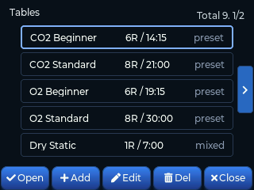
Training follows a table: a plan with a breathe time and a hold time for every round. What you increase and what you keep fixed decides what the session trains.
| Type | What changes | What it builds |
|---|---|---|
| CO2 table | The hold stays fixed and the breathe (recovery) time gets shorter | Tolerance of built-up carbon dioxide — the discomfort in the early and middle part of a hold |
| O2 table | The breathe time stays fixed and the hold gets longer | Tolerance of falling oxygen — the late part of a hold |
These four tables are built in. They cannot be deleted or edited; instead, pressing [Edit] creates a new table using their values as a starting point.
| Name | Rounds | Breathe | Hold |
|---|---|---|---|
| CO2 Beginner | 6R | From 2:00, 15 s shorter each round | 1:00 fixed |
| CO2 Standard | 8R | From 2:00, 15 s shorter each round | 1:30 fixed |
| O2 Beginner | 6R | 2:00 fixed | From 1:00, 5 s longer each round |
| O2 Standard | 8R | 2:00 fixed | From 1:10, 10 s longer each round |
- Top right,
Total 8. 1/2— how many tables there are and which page you are on. Turn pages with the left and right arrows. - The tag on the right —
presetis a built-in table,mixedis one you made yourself. - Name your tables in plain letters and numbers. The table name goes straight into the record's file name, and the on-device keyboard is letters and numbers only.
8.4 Building your own table
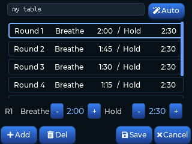
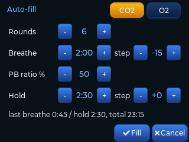
Press [Add] in the table list to open the editor. You can keep up to 50 tables, and one table can have up to 30 rounds.
- The editor — select a round in the list and change the breathe and hold times with
[-]and[+]below. [Add] puts in another round and [Del] takes one out. The name goes in the field at the top. - [Auto] — fills everything in from a rule, instead of pressing your way through it.
- CO2 / O2 — which kind of table to build
- Rounds — how many times to repeat
- Breathe start · step — the breathe time for the first round, and how much to add each round (negative to shorten)
- Hold start · step — the same for the hold
- PB ratio % — what percentage of your static personal best the hold should start at. Change it and the Hold start just below is recalculated (enter your PB in 8.8)
⚠️ Build the table for yourself. If someone else's table, or a preset, is hard work, then cutting rounds or shortening times is the right answer. Finishing a table is not the goal.
8.5 Training
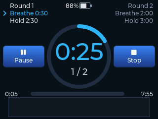

- Told apart by colour — blue is breathe, orange is hold. The big number in the middle is the time left, and below it is which round you are on.
- Top corners — the planned time for this round on the left, for the next round on the right.
- The bar at the bottom — how far through the whole session you are. Time gone on the left, time left on the right.
- [Pause] — pauses. Press again to carry on.
- [Stop] — ends the session. What you did up to that point is still saved.
During a hold, a belly movement graph is drawn along the bottom of the screen. Rest the device on your belly and your contractions show up here — 8.6 covers this separately.
Voice guidance
Voice guidance runs alongside. You do not have to watch the screen, so you can train with your eyes closed.
- It calls out Breathe / Hold when the phase changes
- It calls the time at every minute, 30 sec, 10 sec and 5·4·3·2·1 remaining
- The first hold starts competition style — 3·2·1 → official top → plus 1~5. It is there to give you the feel of a real start, and happens once, in the first round
- The voice is English. The volume is set in settings
Each item can be switched on and off (firmware 2.3 and later). Sound is your only information when you train with your eyes closed, but there are also stretches where you would rather have quiet. The five items — Every min · 30 sec · 10 sec · Countdown · Official Top +1~5 — are switched separately. You can also pick a female or male voice. See 8.8 for the detail.
8.6 Measuring contractions (firmware 2.4 and later)
Hold your breath long enough and your belly starts to twitch by itself — the body's signal to breathe. These are contractions. When the first one arrives, how many there were, and how the gaps close up are an indicator of where you are.
Rest the device on your belly while you train and it counts them for you.
How to place it
- Lie down and simply rest it on your belly. No strap, no pressing it down.
- It only watches during the hold.
- It has nothing to do with equalization measurement — you do not need the tube connected.
What you see while training

- The graph at the bottom draws your belly movement live. A contraction shows up as a clear spike.
- The width of the graph is scaled to the hold time of that round. When the line reaches the right-hand edge, the round is over — so the time left is visible as a picture too.
- During the breathe phase the picture of the hold you just did stays on screen, so you can look back at it.
When the session ends
A line is added to the record for each round. It only appears for rounds that had contractions.
- How many — how many arrived in that round
- First — the time from the start of the hold to the first contraction
- Gap — the average gap between contractions
Reviewing the graph

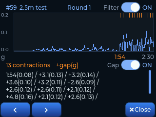
- Open a record and press [Graph] to see that round's trace again. ◀ ▶ below moves between rounds.
- The orange marks along the top are where a contraction was counted. Below the graph each one is listed with its time and strength.
- Turn on the Filter switch at the top right for the graph with the small ripples taken out. Use it to see with your own eyes which peaks were counted.
- Turn on the Gap switch at the bottom right and the list shows the time since the previous
contraction, from the second item on (for example
1:18(0.23) / +3.8(0.19)). Turn it off and you are back to clock times. - Bellies move by different amounts, so the vertical scale can be changed in settings (8.8). If the trace looks flat, lower the scale; if the peaks hit the ceiling, raise it.
8.7 Training records
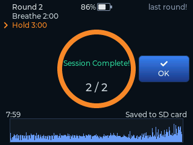
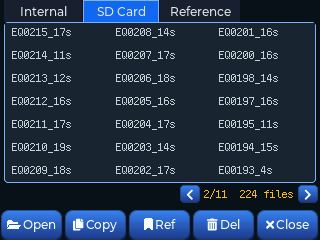
- The completion screen — how many rounds you did, the planned time and the actual time, and where it was saved (SD card or internal memory). Finish the whole table and the two times are almost the same. [Stop] partway through and the actual time is shorter, and time spent paused does not count towards it — only the time you really trained is kept. If there is a problem with the SD card it saves to the internal memory instead and says so.
- The record list — the tabs at the top switch between internal memory and SD card. Higher numbers are more recent.
- Renaming — select a record and press [Edit].
Long-pressing it in the list works just as well.
This device has no clock, so records carry no date.
Writing something like
0728 HWmakes them easy to tell apart later. - [Copy] moves records between the internal memory and the SD card, and [Del] removes them.

- The top summarises the total rounds, the actual time, and whether you finished or stopped.
- The table below is breathe / hold / finish time per round. The finish time counts from the start of the session.
- Under rounds that had contractions is one more line with how many, when the first came, and the average gap (8.6). Press [Graph] to see the trace from that round.
- Records are CSV files, so you can move them to a PC and open them in Excel or Google Sheets (6.8).
8.8 Breath mode settings
Breath mode settings run to three pages. The left and right arrows turn them.
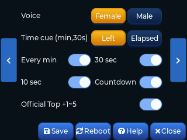
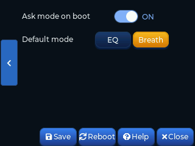
Page 1 — mode switch · training values · sound · USB
| Item | Range / choice | What it does |
|---|---|---|
| Switch to EQ | — | Confirms, saves and restarts (firmware 2.4a and later) |
| Static PB | min · sec | Your static personal best. Used only as the basis for PB ratio in auto-fill (minimum 30 seconds) |
| Graph scale (g) | 0.1 – 1.0 | How many g the top of the vertical axis is on the contraction graph (8.6). Bellies move by different amounts, so it is adjustable (firmware 2.4 and later) |
| Volume (%) | 0–100 % | How loud the voice guidance and alarms are |
| USB | — | Connect to a PC to move records — long-press [Connect] for 1.5 seconds (6.8) |
Page 2 — voice guidance (firmware 2.3 and later)
Switch the guidance on and off item by item, and keep only what you want. They are listed in the order you actually hear them.
| Item | Range / choice | What it does |
|---|---|---|
| Voice | Female / Male | The voice that reads the guidance. The competition start in equalizing mode uses the same voice (firmware 2.3 and later) |
| Time cue (min,30s) | Left / Elapsed | Set to Elapsed and the hold counts up — "one minute", "two minutes". Together with a one-round, maximum-time table this becomes dry static training. In that case the 10 sec and countdown cues do not play during the hold (the breathe phase is unchanged). The default is Left (firmware 2.4a and later) |
| Every min | ON / OFF | Every minute (one minute … ten minutes). Turn it on together with 30 sec and it calls every 30 seconds (firmware 2.4a and later) |
| 30 sec | ON / OFF | thirty seconds |
| 10 sec | ON / OFF | ten |
| Countdown | ON / OFF | Just before a phase ends — five · four · three · two · one |
| Official Top +1~5 | ON / OFF | The competition start for the first hold — official top followed by plus one ~ five |
The Breathe / Hold calls at each phase change are always there. They cannot be switched off.
Page 3 — mode
| Item | Range / choice | What it does |
|---|---|---|
| Ask mode on boot | ON / OFF | Turn it off and the device goes straight into the Default mode at power-on |
| Default mode | EQ / Breath | Which mode to enter when the item above is off |
The settings for equalizing mode are separate, in chapter 9. The two modes keep their settings independently, and only Ask mode on boot, Default mode and the mode switch appear identically on both sides. Voice is a single shared value — change it in either mode and it changes in both.
9. Settings
Press [Set] on the main screen to open them. Settings run to four pages; the left and right arrows turn them.
The settings pages at a glance
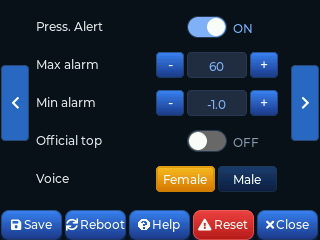
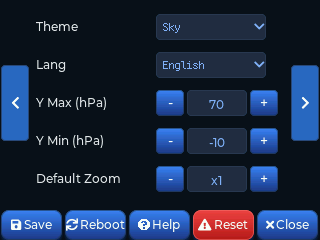
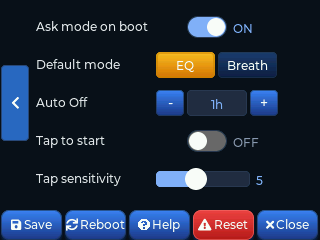
| Page | Theme | Items |
|---|---|---|
| 1 | Device | Switch to Breath · Brightness · Volume · EQ Interval (+ Edit Intervals) · USB |
| 2 | Sound and alarms | Press. Alert · Max alarm · Min alarm · Official top · Voice |
| 3 | Display | Theme · Lang · Y Max · Y Min · Default Zoom |
| 4 | Training modes | Ask mode on boot · Default mode · Auto Off · Tap to start · Tap sensitivity |
Below, the items are grouped by what they do, with the page each one lives on.
9.1 Display


| Item | Page | Range / choice | What it does |
|---|---|---|---|
| Theme | 3 | 7 themes | Colour theme — the names are in the pictures above |
| Brightness (%) | 1 | 10–100 % (steps of 10) | Screen backlight brightness |
| Lang | 3 | English / Korean | Display language |
9.2 Sound
| Item | Page | Range | What it does |
|---|---|---|---|
| Volume (%) | 1 | 0–100 % | How loud the interval and alarm sounds are (slider) |
| EQ Interval | 1 | ON / OFF | Turns the block alarm sequence on and off (7.1) |
| Edit Intervals | 1 | 4 blocks (interval × count) | Reached with the [Edit Intervals] button on the right of the EQ Interval row. Interval 0 = block off · below 1 second it steps in 0.1 s · count 0 = endless (∞) |
| Press. Alert | 2 | ON / OFF | When on, sounds an alarm if the pressure leaves the set range, and draws the training band on the graph (4.3) |
| Max alarm | 2 | 0–150 hPa (steps of 5) | Upper limit of the alarm and the training band |
| Min alarm | 2 | -20.0–100.0 hPa | Lower limit of the alarm and the training band. The nearer zero, the finer it steps — see below |
| Official top | 2 | ON / OFF | Starts a measurement competition style (see below) |
| Voice | 2 | Female / Male | The voice that reads the guidance (firmware 2.3 and later). Shared with breath training mode, so changing it in either place changes both |
Min alarm steps more finely the closer it is to zero. Between -1.0 and 1.0 it steps by 0.1, outside that by 1, and past ±5.0 by 5.
Turn Official top on and pressing [Start] no longer begins the measurement straight away. The voice calls 3 · 2 · 1 → official top, and measurement, stopwatch and EQ Interval all begin at the official top. Then plus 1 ~ 5 follows.
- It matches how a real competition runs, so it is used when a competition is coming up, to get the feel of the start.
- Nothing is measured during the countdown, so the preparation time does not end up in the graph.
- Touch the screen during the countdown to cancel.
- It uses the same English guidance as breath training mode (8.5). The female / male choice follows the same setting too.
9.3 Graph
| Item | Page | Range | What it does |
|---|---|---|---|
| Y Max (hPa) | 3 | 10–200 hPa (steps of 5) | Upper limit of the graph's vertical axis |
| Y Min (hPa) | 3 | -50–190 hPa | Lower limit of the vertical axis. Between -5 and 5 it steps by 1, outside that by 5 — so you can put a gridline at -1 or -2, just below zero, and small negative pressures show up instead of sitting on the floor |
| Default Zoom | 3 | — | The time-axis zoom a measurement starts at |
9.4 Other
| Item | Page | Range | What it does |
|---|---|---|---|
| Auto Off | 4 | 0–120 min | Switches off by itself after this long with no activity. 0 means never |
| USB | 1 | — | Connect to a PC to move files — long-press [Connect] for 1.5 seconds (6.8) |
| Ask mode on boot | 4 | ON / OFF | Turn it off and the device goes straight into the default mode at power-on (8.1) |
| Default mode | 4 | EQ / Breath | Which mode to enter when the item above is off |
| Switch to Breath | 1 | — | Confirms, saves and restarts (chapter 8) |
| Tap to start | 4 | ON / OFF | Tap the device to start and stop a measurement (firmware 2.4 and later). Off by default |
| Tap sensitivity | 4 | 1–10 | How gentle a tap it should notice. Higher is more sensitive |
Tap to start is for the moment when one hand is busy holding the Equal Vent to your nose. Give the device a light tap where it sits on the table and the measurement starts; tap again to stop.
- It does not respond while you are holding it — only a tap on a device that was sitting still counts.
- If it misses your taps, raise the sensitivity; if brushing the desk sets it off, lower it.
9.5 The buttons along the bottom
These sit at the bottom of the settings screen. [Save] [Reboot] [Help] [Reset] [Close]
| Button | What it does |
|---|---|
| Save | Saves the settings you changed to the device |
| Reboot | Restarts the device (some settings only take effect after a restart) |
| Help | A summary of the controls and features (the firmware version is at the bottom) |
| Reset ⚠️ | Returns every setting to the factory default (theme, brightness, alarms, Y axis and so on). Marked in red — it cannot be undone |
| Close | Leaves the settings screen |
Reset only resets the settings. Your saved measurements, screenshots and the file counter (the number the next measurement will get) are left alone. Nothing you recorded is deleted.
Changes are kept only if you press [Save]. Close without saving and some of them will not stick.
10. Care and updates
10.1 Firmware updates
There are two ways to update. Over a USB cable, which needs no SD card, or with an SD card as before. Neither needs any software installed on the PC.
New firmware is at equalscope.kr/en/download. Two files are posted, and they are for different things.
equpdate_….uf2— for the USB cable (method 1)equpdate_….bin— for the SD card (method 2)
Method 1 — USB cable (no SD card)
- Connect the device to a PC with a USB cable.
- Long-press the [Connect] button on the Settings → USB row for 1.5 seconds, then press [Firmware Update].
- When the device is ready, a drive called EQ UPDATE appears on the PC.
- Drag the
.uf2file you downloaded onto that drive. A progress bar fills on the device while it copies — that is the firmware being written. - When the copy finishes the device asks you to [Restart]. Press it and it comes up on the new firmware.
· Do not unplug the cable while it copies. If it does come out, the device still starts on the old firmware — just begin again.
· Nothing is stored on this drive. It exists to receive the update file. Open it and you will find a note (
README.TXT) with the current version.· Put a
.binfile on it and the device tells you it is not an update file. Over USB, use the.uf2.· ★ Firmware v2.0 and older does not have this feature. If you are on one of those, update once with the SD card method below — after that the USB cable is all you need.
Method 2 — SD card
- Copy the
.binfile you downloaded (it starts withequpdate_) into the top (root) folder of the SD card. - Put the card in the device and switch it on.
- During start-up the device finds the firmware file by itself, updates and restarts.
- When it is done, the firmware file on the card is deleted automatically.
· Because it deletes itself, the same version will not be installed again at the next start-up.
· You can check the current firmware version at the bottom of the Settings → Help screen.
10.2 Zeroing and sensor accuracy
- It re-zeroes every time you switch it on. For an accurate measurement, do not put any pressure on the Equal Vent at power-on — leave it at ambient pressure (1.2).
- If the device is moved while it zeroes, it zeroes again (firmware 2.4 and later).
Switching it on as you take it out of the bag, or with it in your hand, mixes that movement into the zero,
and then everything you measure that day is off by the same amount.
- If it keeps moving it skips the zero. A note stays at the bottom of the screen, and it zeroes when you press [Start] instead.
- When you see that note, put the device down on the table and start again.
- The sensor is calibrated for accuracy before it ships.
10.3 Storage and cleaning
- ⚠️ The device is not waterproof. Never wash it. Keep water away from it.
- ⚠️ Do not leave it anywhere hot. That means a car in summer,
a sunny windowsill, or near a heater. A closed car reaches
60–70 °C in midsummer — do not leave it in the car.
- The battery: lithium batteries left hot for long periods swell and lose much of their life, and rarely there is a risk of fire. This is the more important of the two.
- The case: it is 3D printed, so long periods above 50 °C can warp it.
- Equal Vent: there is an insert nut inside, so it is not suited to washing. Wipe the part that touches your nose with a wet wipe and dry it straight away. If the inside needs cleaning, use a cotton bud.
- Hygiene (personal and shared): the Equal Vent touches the area around the nose and mouth, so one per person is recommended. Where several people share one, as in a class, wipe the contact area with a disinfectant wipe and let it dry completely between users.
- Tube: take off all the fittings, wash it with water and dry it thoroughly before use.
- Battery: if you are not going to use the device for a long time, store it charged.
11. Troubleshooting (FAQ)
| Symptom | What to check |
|---|---|
| Layer lines, small steps or gaps on the surface — is it faulty? | Some parts are 3D printed, so there can be layer lines, slight steps, differences in surface texture and small gaps where parts meet. That comes with the process, and only units with no problem in function or durability are inspected and shipped. |
| It warped after a summer in the car | The case is 3D printed and long periods above 50 °C can deform it. A closed car reaches 60–70 °C in midsummer. See 10.3 for storage. |
| The SD card is not recognised | Check that it is formatted FAT32, and try reseating the card. |
| Can I update without an SD card? | Yes, over a USB cable — drag the .uf2 file onto the device's drive and that is it (10.1). Firmware v2.0 and older does not have the feature, so those need one update by SD card first. |
| I put a file on the update drive and nothing happened | Over USB it is the .uf2 file. The .bin is for the SD card, so the device refuses it and says it is not an update file (10.1). |
| The measurement was not saved | Nothing is saved if the signal is too short or too weak. Check that the actual equalizing was measured for long enough (6.1). |
| The graph goes below zero / the zero is off | Switch off and on again to re-zero, taking care not to put any pressure on it as it starts. |
| Screenshots are not being saved | Screenshots only go to the SD card. Check that a card is fitted (6.7). |
| The pattern is not what I expected | If your technique was not consistent through the session it can come out as a borderline pattern (5.3). |
12. Safety
- Do breath training (breath-holds) out of the water only. You can lose consciousness without warning. Never do it alone, while driving, or beside water, and in water always train with a buddy or an instructor.
- Do not hyperventilate before a hold. It greatly increases the risk of blackout.
- This is not a medical device. The measurements and analysis are a training aid and a reference, not grounds for a diagnosis or a guarantee of safety.
- Do not force the pressure. Over-pressurizing can injure you. Ease off when you see the over-pressure warning (5.4).
- Do not leave it anywhere hot. Long periods at high temperature, as in a car in summer, can make the battery swell or, rarely, catch fire. See 10.3 for storage.
- Do all equalization and freediving training under the supervision of a qualified instructor.
- The advice in the analysis is information for reference, based on the measured pressure pattern.